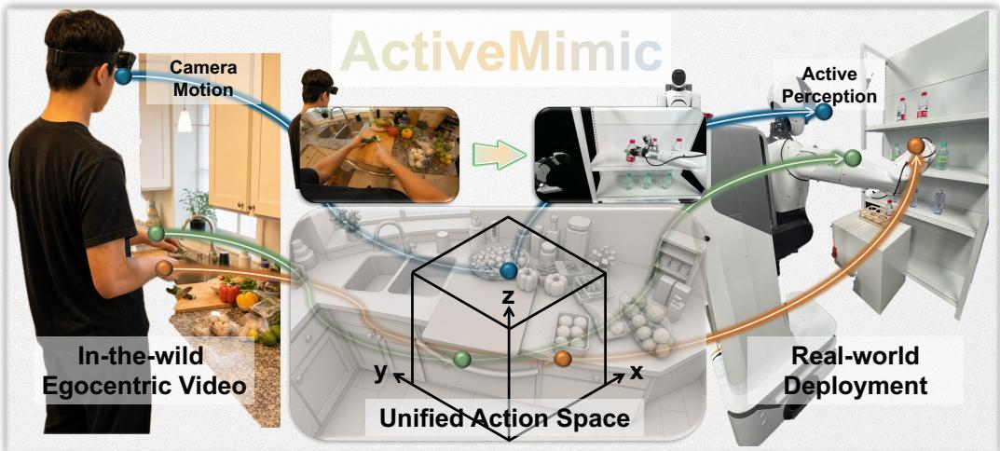

ActiveMimic：通用视频自监督常忽略拍摄者运动与主动观测，这篇提供了利用 egocentric video 的新角度
指出 egocentric video 中的人类视角调整不应被当作噪声，而是主动感知学习信号。
ActiveMimic: Egocentric Video Pretraining with Active Perception Xingyao Lin, Guojin Zhong, Tianyi Lu, Ziyi Ye, Yichen Zhu, Zuxuan Wu, Yu-Gang Jiang；机构信息 arXiv 元数据未列出。 arXiv + project 原文链接
编号2606.06194优先级P1类别project会议arXiv + project方法从 body-worn RGB camera 恢复同步 camera/wrist trajectories，把 camera motion 建模为 viewpoint action，并和 manipulation 一起预训练。来源arXiv / OpenReview
先说结论。通用视频自监督常忽略拍摄者运动与主动观测，这篇提供了利用 egocentric video 的新角度。
Figureure 2 · : Overview of ActiveMimicFigure 2: Overview of ActiveMimic. Left: recovering synchronized camera and wrist trajectories from a single body-worn RGB camera. Middle: resolving camera-wrist coupling and encoding as a unified 27D action. Right: pretraining on the 27D action to jointly model active perception and manipulation, then adapting to the target robot.这张图概括 ActiveMimic 的整体方法流程。阅读时先看模块之间传递的训练信号，再看作者如何把目标拆成可优化的子问题。

Figureure 1 · : ActiveMimic acquires active perception from in-the-wild egocentric hFigure 1: ActiveMimic acquires active perception from in-the-wild egocentric human video and transfers it to real-world humanoid robots. Left to center: egocentric camera motion and wrist action together form a 27-dimensional unified action representation that enables the model to jointly learn active perception and manipulation. Center to right: active perception is transferred to a humanoid robot, which repositions its viewpoint actively during task execution.这张图来自论文 PDF 的结构化抽取。当前用于辅助理解 ActiveMimic 的方法或实验，请结合正文精读段落一起看。
核心问题
通用视频自监督常忽略拍摄者运动与主动观测，这篇提供了利用 egocentric video 的新角度。
方法拆解
从 body-worn RGB camera 恢复同步 camera/wrist trajectories，把 camera motion 建模为 viewpoint action，并和 manipulation 一起预训练。